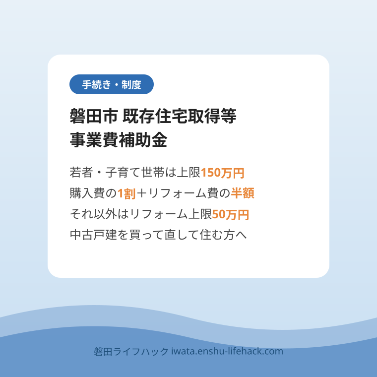

手続き・制度
磐田市の既存住宅取得等事業費補助金｜若者・子育て世帯は上限150万円、中古戸建は購入費の1割＋リフォーム費の半額

この記事の要点
Q. 磐田市の既存住宅取得等事業費補助金は、誰が・いくら受けられますか？
A. 市内の既存住宅（人が住んだことのある戸建て）を取得し、リフォーム工事等を行って居住する方が対象。若者・子育て世帯は建物購入費の10分の1＋リフォーム工事費の2分の1などで、上限は市外からの転居150万円・市内100万円。若者・子育て世帯以外はリフォーム工事費の2分の1・上限50万円。窓口は建築住宅課（電話0538-37-4851）。
磐田市内で「中古の戸建てを買って、直して住む」計画には、市の補助金が用意されています。「磐田市既存住宅取得等事業費補助金」です。市内の既存住宅を取得し、リフォーム工事などを行って居住する方が対象で、若者世帯・子育て世帯なら、建物購入費の10分の1とリフォーム工事費の2分の1が補助され、上限は市外からの転居で150万円、市内での転居で100万円に届きます。
この記事では、静岡県が県内市町の制度を集めて発行した「静岡県住まいづくり支援ガイド（令和8年度版）」の磐田市の制度欄と、磐田市公式サイトの制度ページの案内をもとに、対象になる住宅と世帯、金額の組み立て、そろえるべき条件、窓口を確認しました。中古住宅は物件ごとに状態が違い、補助の可否も個別条件で変わります。金額の仕組みを先に押さえてから物件探しに入るための整理です。
まず結論｜若者・子育て世帯は上限150万円、それ以外はリフォーム上限50万円
補助の組み立ては世帯の区分で変わります。若者世帯・子育て世帯は三つの使い方ができます。一つ目は「取得」で、建物購入費の10分の1にリフォーム工事費の2分の1を合わせた額が補助されます。二つ目は「建替え」で、除却費（解体費用）の2分の1です。三つ目は「リフォーム」で、リフォーム工事費の2分の1です。
上限額は、若者世帯・子育て世帯で、市外からの転居が150万円、市内での転居などが100万円です。若者世帯・子育て世帯に当てはまらない場合は、リフォーム工事費の2分の1、上限50万円という形になります。取得そのものへの補助が付くのは若者世帯・子育て世帯だけ、という線引きがこの制度の骨格です。
対象の中心は「既存住宅」です。市の案内では、既存住宅とは「人が住んだことがある戸建て住宅で、現に使用していない、または3か月以内に使用しなくなるもの」と説明されています。新築や、まだ誰も住んだことのない完成物件は、この制度の想定する住宅とは違う点に注意してください。
金額の組み立て｜購入費の1割＋リフォーム費の半額が基本形
取得パターンの計算を例で見ます。建物購入費が1,500万円、リフォーム工事費が200万円の若者・子育て世帯なら、購入費の10分の1が150万円、リフォーム費の2分の1が100万円で、合計は250万円になります。ただし交付には上限があるため、市外からの転居なら150万円、市内なら100万円が実際の上限です。購入費が高い物件ほど、上限に先に届く計算になります。
逆に、建物購入費800万円・リフォーム工事費100万円なら、80万円＋50万円で130万円となり、市外からの転居（上限150万円）の範囲に収まります。リフォームの比重が高い計画ほど、上限までの余裕を使い切れる設計です。
建替えパターンは除却費の2分の1です。古い家付きの土地を買って解体し、新しく建てる計画では、解体費用の半分が補助の対象になります。リフォームだけのパターンは工事費の2分の1で、若者・子育て世帯以外でも使える唯一の形です。
なお、「若者世帯」「子育て世帯」の年齢や子どもの範囲といった定義の細部は、世帯の状況によって当てはめが変わります。この記事では断定せず、申請前に市の案内と窓口で自分の世帯がどちらに区分されるかを確認することを前提に読み進めてください。

対象の条件｜10年居住・市税・自治会・完了報告の四つが柱
県のガイドに整理された対象要件の柱は四つあります。第一に、事業完了日から10年間はその住宅に居住する見込みがあることです。買ってすぐ転売したり、短期間で引っ越したりする計画では使えません。
第二に、入居者全員に市税の滞納がないことです。世帯のうち一人でも滞納があると対象から外れる読み方になるため、家族全員分を事前に確認しておく必要があります。第三に、居住する区域の自治会に加入することです。磐田市では自治会加入が補助の条件に明記されている制度がほかにもあり、地域との関係を前提にした設計になっています。
第四に、原則として、交付決定があった日の属する年度の3月31日までに完了報告書を提出できることです。つまり、交付決定を受けてから年度末までに取得や工事を終え、報告まで済ませられる工程であることが求められます。年度後半に動き出すと、この期限が実質的な締切になります。
さらに、当該既存住宅以外に、市内に自己の居住用の所有建物がないことも要件に挙がっています。市内にすでに自宅を持っている方が、もう一軒買うための制度ではない、という位置づけです。
古い家は耐震性能の確認が要る｜昭和56年5月31日以前の基準なら評点1.0以上
事業後に住む住宅が、昭和56年5月31日以前の建築基準法の基準で建てられている場合は、耐震性能の条件が付きます。木造の建物なら耐震評点が1.0以上であること、それ以外の構造では構造耐震指標（Is値）が0.6以上であることの、いずれかを満たす必要があります。
中古戸建ての多くは昭和56年以前の「旧耐震」の物件を含みます。評点が基準に届かない家は、リフォームと合わせて耐震補強をして基準を満たすのか、それとも対象外になるのかを、購入前に窓口と施工業者に確認しなければなりません。物件の安さだけで決めると、補助以前に条件で止まる可能性があります。
磐田市には木造住宅の耐震診断を無料で受けられる「わが家の専門家診断事業」や、耐震補強工事への助成も別にあります。既存住宅取得の補助と耐震の助成は別の制度なので、併用の可否や順番は個別に確認してください。この記事では併用できるかどうかを断定しません。
窓口｜建築住宅課（電話0538-37-4851）。契約前の相談が安全
問い合わせ先は、磐田市役所の建設部 建築住宅課で、電話は0538-37-4851です。制度の案内は磐田市公式サイトの住宅のページ（ページ番号1001513）に掲載され、静岡県公式の移住・定住情報サイト「ゆとりすと静岡」からも市のページへ案内されています。
実務上の順番として大切なのは、売買契約や工事契約の前に一度相談することです。交付決定と年度末の完了報告という要件がある以上、契約が先行すると工程が合わなくなる恐れがあります。候補物件の所在地・建築時期・世帯の区分を持って相談に行くと、話が具体的になります。
必要書類の顔ぶれや申請の受付期間、予算の残り状況は年度によって変わります。この記事で扱った金額と条件は令和8年度版の県ガイドに基づくもので、申請時点の市の最新案内で必ず再確認してください。

良い点｜「買って直す」を正面から支える金額設計
良い点は、購入費そのものに10分の1の補助が付くことです。リフォーム補助だけの制度は多くありますが、取得とリフォームを一つの制度で束ね、上限150万円まで届く設計は、中古戸建てへ移る若い世帯の初期費用を実際に軽くします。
建替えの除却費まで対象に入っている点も実務的です。古家付き土地は解体費が購入判断の重しになりますが、その半額を見てもらえるなら、更地の新築物件との比較がしやすくなります。
また、県のガイドという形で他市町の制度と並べて読めるため、磐田市への移住を近隣市と比べながら考える人にも情報が届きやすい形になっています。市の公式ページへ県の移住サイトからたどれる導線も含め、制度の見つけやすさは悪くありません。
注文したい点｜世帯区分の定義と期限の読み解きが要る
注文したい点は、「若者世帯」「子育て世帯」の定義が要約資料だけでは読み切れないことです。上限が150万円になるか50万円になるかの境目なのに、年齢や子どもの年齢の線引きを確認するには市の案内や窓口まで行く必要があります。要約の段階でもう一歩、区分の目安が示されると、物件探しの初期段階で見立てが立てやすくなります。
もう一つは、交付決定の年度末までに完了報告という期限の重さです。中古住宅の売買とリフォームは、売主の都合や工事の遅れで工程がずれやすく、年度後半の購入では条件を満たせない場合も出ます。申請の早い段階で工程表を窓口と共有できる運用があると、使えるはずの制度で落ちる人を減らせます。
耐震の条件も、旧耐震の家を買う人ほど直面します。評点を満たすための補強費が補助額を上回ることもあり得るため、金額の魅力と条件の重さはセットで見る必要があります。
対案・結論｜物件より先に「世帯区分と工程」を固める
対案として提案したい進め方は、物件探しの前に二つを固めることです。第一に世帯区分です。自分の世帯が若者世帯・子育て世帯のどちらに当たるか、当たらない場合はリフォーム上限50万円の形で計画が成り立つかを、建築住宅課で確認します。
第二に工程です。交付決定から年度末の完了報告までを逆算し、売買契約・リフォーム工事・引っ越しの時期を並べます。特に年度後半は、工事完了が3月末に間に合うかが最大の確認点になります。
結論として、この補助金は「中古の家を買って直して長く住む」という選択を、市が金額で後押しする制度です。10年居住という条件は、そのまま「磐田に根を張る」ことへの約束でもあります。長く住む前提が持てる方にとって、上限150万円は住まい選びの選択肢を広げるだけの力があります。
確認する順番｜区分、住宅、耐震、工程の四つをこの順で
確認は四つの順番で進めます。第一に世帯区分です。若者世帯・子育て世帯に当たるかで、使えるパターンと上限が決まります。
第二に住宅の当てはめです。人が住んだことがある戸建てで、現に使用していないか3か月以内に使用しなくなる住宅かどうか。市内にほかに自己居住用の所有建物がないかも合わせて確認します。
第三に耐震です。建築時期が昭和56年5月31日以前の基準かどうか、評点やIs値の資料が売主側にあるかどうかを見ます。第四に工程です。交付決定の年度末までに完了報告が出せる日程かどうかを、仲介・施工業者と擦り合わせます。
この四つを押さえてから物件の内見に入ると、補助の対象外だったという行き違いを避けられます。逆に言えば、四つのどれかが崩れる物件は、補助なしでも買いたい家かどうかで判断することになります。
大石の視点｜中古住宅の流通は、まちの新陳代謝そのもの
大石の視点として、この制度は空き家対策と移住促進の交差点にあると感じます。人が住んだことのある戸建てを次の住み手につなぐことは、空き家の増加を抑え、地域の自治会に新しい世帯を迎えることでもあります。自治会加入が条件に入っているのは、その思想の表れでしょう。
不動産の現場では、中古戸建ては「安いけれど直すお金が読めない」という理由で敬遠されがちです。購入費の1割とリフォーム費の半額という補助の形は、その読みにくさに直接効きます。特に市外からの転居で上限150万円という数字は、移住先として磐田を選ぶ理由の一つになり得ます。
一方で、10年住む約束と耐震の条件は軽くありません。補助は家を買う理由にはなっても、住み続ける理由にはなりません。まちとの相性、通勤や学校、自治会との付き合いまで含めて「ここに住む」と決めた世帯にこそ、この制度は正しく届くのだと思います。
まとめ
磐田市既存住宅取得等事業費補助金は、市内の既存住宅（人が住んだことのある戸建て）を取得し、リフォーム等を行って住む方に、費用の一部を補助する制度です。
- 若者・子育て世帯は、取得（建物購入費の10分の1＋リフォーム工事費の2分の1）、建替え（除却費の2分の1）、リフォーム（工事費の2分の1）が対象。上限は市外からの転居150万円・市内100万円
- 若者・子育て世帯以外はリフォームのみ対象で、工事費の2分の1・上限50万円。世帯区分の定義は市の案内と窓口で要確認
- 条件は、完了日から10年間の居住見込み、入居者全員の市税完納、自治会加入、交付決定の年度末までの完了報告、市内に他の自己居住用所有建物がないこと
- 昭和56年5月31日以前の基準の住宅は、耐震評点1.0以上（木造）またはIs値0.6以上の耐震性能が必要。窓口は建築住宅課（電話0538-37-4851）で、契約前の相談が安全
参考にした公式情報
- 磐田市「既存住宅取得等事業費補助金」／磐田市（市内の既存住宅を取得しリフォーム工事等を行って居住する方が対象であること、既存住宅の定義を2026年11月28日確認）
- 磐田市「建築物等耐震改修促進事業費補助金交付要綱」（令和8年改正）／磐田市（昭和56年5月31日以前に建築された既存住宅の定義など、古い住宅の耐震の考え方を2026年11月28日確認）
- 静岡県「住まいづくり支援ガイド（令和8年度版）」／静岡県（第二部・磐田市の制度欄で、補助率と上限額、対象要件、建築住宅課の電話番号を2026年11月28日確認）
最終確認日：2026-11-28 ／ 本記事は公表情報と執筆者の見解を分けて記載しています。制度・数値・公開状況は変更される場合があるため、最新情報は磐田市公式ページでご確認ください。